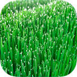

<!DOCTYPE html>
<html>
<head>
    <meta charset="utf-8">
    <meta name="viewport" content="initial-scale=1, maximum-scale=1, user-scalable=no, width=device-width">

    <title>"Bobby Xively"</title>

    <!-- build:css({.tmp,app}) styles/main.css -->
    <link rel="stylesheet" href="styles/main.css">
    <!-- endbuild -->

    <!-- custom vendor CSS -->
    <!-- <link rel="stylesheet" href="styles/some.contrib.css"> -->
    <!-- end custom vendor CSS -->

    <!-- cordova script (this will be a 404 during development) -->
    <script src="cordova.js"></script>


    <!-- build:css styles/vendor.css -->
    <!-- bower:css -->
    <link rel="stylesheet" href="bower_components/ionic/release/css/ionic.css" />
    <!-- endbower -->
    <!-- endbuild -->
    <link rel="stylesheet" href="vendor/app.css">
</head>
<script>
    function openExternal(elem) {
        window.open(elem.href, "_system");
        return false; // Prevent execution of the default onClick handler
    }
</script>

<body ng-app="XivelyApp" animation="slide-left-right-ios7">

<ion-nav-bar class="nav-title-slide-ios7 bar-dark">
</ion-nav-bar>

<ion-nav-view></ion-nav-view>

<script id="intro.html" type="text/ng-template">
    <ion-view id="intro">
        <ion-pane id="wrapper">
            <ion-nav-buttons side="left">
                <button class="button button-primary button-clear no-animation"
                        ng-click="startApp()" ng-if="!slideIndex">
                    Skip Intro
                </button>
                <button class="button button-primary button-clear no-animation"
                        ng-click="previous()" ng-if="slideIndex > 0">
                    Previous Slide
                </button>
            </ion-nav-buttons>
            <ion-nav-buttons side="right">
                <button class="button button-primary button-clear no-animation"
                        ng-click="next()" ng-if="slideIndex != 3">
                    Next
                </button>
                <button class="button button-primary button-clear no-animation"
                        ng-click="startApp()" ng-if="slideIndex == 3">
                    Start using Bobby Xively
                </button>
            </ion-nav-buttons>
            <ion-slide-box show-pager="true" on-slide-changed="slideChanged(index)">
                <ion-slide>
                    <h3>Thank you for choosing Bobby Xively</h3>

                    <div class="logo">
                        
                    </div>
                    <p>
                        You can start right away exploring the app with a Xively demo feed located at
                        <a href="http://xively.com/feeds/1664985147" onClick="javascript:return openExternal(this)">http://xively.com/feeds/1664985147</a>
                    </p>

                    <p>
                        But of course you want to connect your own data and take the intro tour to learn more.
                    </p>
                </ion-slide>
                <ion-slide>
                    <h3>Connect your Xively feed</h3>

                    <div id="list">
                        <!--h5>Just three steps:</h5-->
                        <ol>
                            <li>Prepare your feeds data points with tags</li>
                            <li>Register your API key in app Settings</li>
                            <li>Enter the feed id you want to connect to</li>
                            <li>Refresh the app by dragging down the app window</li>
                        </ol>
                    </div>
                </ion-slide>
                <ion-slide>
                    <h3>Tagging your datapoints</h3>

                    <div class="weather-box" id="forecast">

                        <div ng-init="checked=null">
                            <div class="row ">
                                <div class="col">
                                    <label>Data</label>
                                </div>
                                <div class="col-icon col">
                                    <i class="col-icon-font icon ion-arrow-graph-up-right"
                                       ng-click="checked=1"></i>
                                </div>
                                <div class="col">
                                </div>
                            </div>
                            <div class="row">
                                <div class="col">
                                    <label>Value</label>
                                </div>
                                <div class="col-icon col">
                                    <i class="col-icon-font icon ion-ios7-gear"
                                       ng-click="checked=2"></i>
                                </div>
                                <div class="col">
                                </div>
                            </div>
                            <div class="row">
                                <div class="col">
                                    <label>Switch</label>
                                </div>
                                <div class="col-icon col">
                                    <i class="col-icon-font icon ion-ios7-checkmark"
                                       ng-click="checked=3"></i>
                                </div>
                                <div class="col">
                                </div>
                            </div>
                            <div class="row">
                                <div class="col">
                                    <label>Time Value</label>
                                </div>
                                <div class="col-icon col">
                                    <i class="col-icon-font icon ion-ios7-clock"
                                       ng-click="checked=4"></i>
                                </div>
                                <div class="col">
                                </div>
                            </div>
                            <div ng-switch="checked" class="logo my-switch-container">
                                <div ng-switch-when="1" class="my-switch-animation">
                                    <p>
                                        Data collection channels are tagged with type 'ctrlData'.
                                        Additional tags are
                                        minValue,
                                        maxValue, minCritical and maxCrtitical. The values of these
                                        tags are used to show a gauge with actual value between minValue and maxValue. minCritical
                                        and
                                        maxCrtitical is used to colour the gauge with critical ranges.
                                    </p>
                                </div>
                                <div ng-switch-when="2" class="logo my-switch-animation">
                                    <p>
                                        Value controls are used to control a device. The type must be 'ctrlValue'.
                                        You can now set a value with the slider. The control must be tagged with min and
                                        max
                                        tags indicating min and max values of the slider.
                                    </p>
                                </div>
                                <div ng-switch-when="3" class="logo my-switch-animation">
                                    <p>
                                        Switch controls with type 'ctrlSwitch' is a simple on/off channel. This enables
                                        you
                                        to send an on/off value to your device. The value must be 1 or 0.
                                        If your system publishes the switch control value the app will be notified and
                                        the
                                        checkbox
                                        will reflect the device state.
                                    </p>
                                </div>
                                <div ng-switch-when="4" class="logo my-switch-animation">
                                    <p>
                                        Timer controls is tagged with type 'ctrlTimeValue'. This is used to send timer
                                        values to
                                        your device. Values must be in the form 'hh:mm'.
                                    </p>
                                </div>
                                <div ng-switch-when=null class="logo my-switch-animation">
                                    <p>
                                        All Xively channels must be tagged with name and type - e.g. a temperature
                                        datapoint
                                        is
                                        tagged with
                                        name:'Temperature', type:'ctrlData'.
                                        The app will ignore channels that are not tagged. Data change notifications is
                                        received
                                        on all controls. The chart and gauge is updated instantly.
                                        Tap on the controls above to learn more.
                                    </p>

                                </div>
                            </div>
                        </div>
                    </div>
                </ion-slide>
                <ion-slide>
                    <h3>Get started</h3>

                    <p>
                        Start by tagging a single data collection channel and see the app in action.
                        You can add or remove channels on the fly. Just refresh the app by dragging the app window down.
                    </p>

                    <p>
                        Switch between weather forecast and Xively monitor by tapping current temperature.
                    </p>

                    <p>
                        Weather conditions and forecast is provided by
                        <a href="http://www.openweathermap.com/" onClick="javascript:return openExternal(this)">OpenWeatherMap</a>
                    </p>

                    <p>
                        You can find further information and help on our facebook site
                        <a href="http://www.facebook.com/bobbyxively" onClick="javascript:return openExternal(this)">http://www.facebook.com/bobbyxively</a>
                    </p>

                    <p>Enjoy</p>
                </ion-slide>
            </ion-slide-box>
        </ion-pane>
    </ion-view>
</script>

<script id="main.html" type="text/ng-template">
    <ion-view hide-nav-bar="true">
        <ion-pane id="wrapper">
            <background-cycler class="bg-fade"></background-cycler>

            <header ng-cloak id="header" class="bar bar-header bar-clear">
                <h1 class="title">
                <span class="city">
                    <i id="city-nav-icon" class="icon ion-navigate"></i>{{currentCity}}</span><br>
                    <current-time></current-time>
                </h1>
                <button ng-click="showSettings()" class="button button-icon"><i class="icon ion-gear-a"></i></button>
            </header>

            <ion-content delegate-handle="details"
                         scroll-event-interval="20"
                         overflow-scroll="false"
                         scrollbar-y="false">
                <ion-refresher on-refresh="refreshData(false)">
                </ion-refresher>
                <div id="main-content" ng-hide="current == null">
                    <current-weather orientation-change></current-weather>
                    <forecast ng-hide="viewXively"></forecast>
                    <xively ng-show="viewXively"></xively>
                </div>
            </ion-content>
        </ion-pane>
    </ion-view>
</script>

<script id="settings.html" type="text/ng-template">
    <div id="settings-modal" class="modal" ng-controller="SettingsCtrl">
        <ion-header-bar class="bar bar-header bar-dark">
            <div class="buttons">
                <button class="button button-clear button-primary" ng-click="modal.hide();intro()">Intro</button>
            </div>
            <h1 class="title">Settings</h1>

            <div class="buttons">
                <button class="button button-clear button-primary" ng-click="modal.hide()">Cancel</button>
            </div>
        </ion-header-bar>
        <ion-content>
            <div class="padding">
                <div class="list">
                    <label class="item item-input">
                        <span class="input-label">Xively key</span>
                        <input ng-model="settings.keyXively" type="text">
                    </label>
                    <label class="item item-input">
                        <span class="input-label">Xively feed</span>
                        <input ng-model="settings.feedXively" type="text">
                    </label>
                    <label class="item item-input">
                        <span class="input-label">
                        <button class="button button-small button-positive ion-button" ng-click="scan()">Scan Device
                        </button>
                        </span>
                        <input type="text" placeholder="Serial number ..." ng-model="settings.deviceId">
                    </label>
                    <label class="item item-input">
                        <span class="input-label">Units</span>
                        <ion-radio-buttons ng-model="settings.tempUnits">
                            <ion-button-radio class="button button-small button-positive ion-button-radio"
                                              ng-model="settings.tempUnits" name="tempUnits" ng-value="'f'">&deg;F
                            </ion-button-radio>
                            <ion-button-radio class="button button-small button-positive ion-button-radio"
                                              ng-model="settings.tempUnits" name="tempUnits" ng-value="'c'">&deg;C
                            </ion-button-radio>
                        </ion-radio-buttons>
                    </label>
                    <label class="item item-input">
                        <span class="input-label">Background  </span>
                        <ion-checkbox ng-model="settings.useFlickr">
                        </ion-checkbox>
                    </label>
                    <label class="item item-input">
                        <span class="input-label">Device Location</span>
                        <ion-checkbox ng-model="settings.useDeviceLoc">
                        </ion-checkbox>
                    </label>
                </div>
            </div>
        </ion-content>
    </div>
</script>

<script src="https://maps.googleapis.com/maps/api/js?v=3.exp&sensor=false"></script>

<!-- build:js scripts/vendor.js -->
<!-- bower:js -->
<script src="bower_components/jquery/dist/jquery.js"></script>
<script src="bower_components/angular/angular.js"></script>
<script src="bower_components/angular-animate/angular-animate.js"></script>
<script src="bower_components/angular-sanitize/angular-sanitize.js"></script>
<script src="bower_components/angular-ui-router/release/angular-ui-router.js"></script>
<script src="bower_components/ionic/release/js/ionic.js"></script>
<script src="bower_components/ionic/release/js/ionic-angular.js"></script>
<script src="bower_components/angular-resource/angular-resource.js"></script>
<script src="bower_components/globalize/lib/globalize.js"></script>
<script src="bower_components/lodash/dist/lodash.compat.js"></script>
<script src="bower_components/momentjs/moment.js"></script>
<!-- endbower -->
<script src="vendor/dx.chartjs.js"></script>
<script src="vendor/xivelyjs-1.0.4.js"></script>
<!-- endbuild -->

<!-- custom vendor folder JS -->

<!-- end custom vendor JS -->

<!-- build:js({.tmp,app}) scripts/scripts.js -->
<script src="scripts/app.js"></script>
<script src="scripts/services.js"></script>
<script src="scripts/directives.js"></script>
<script src="scripts/filters.js"></script>
<!-- endbuild -->

</body>
</html>
